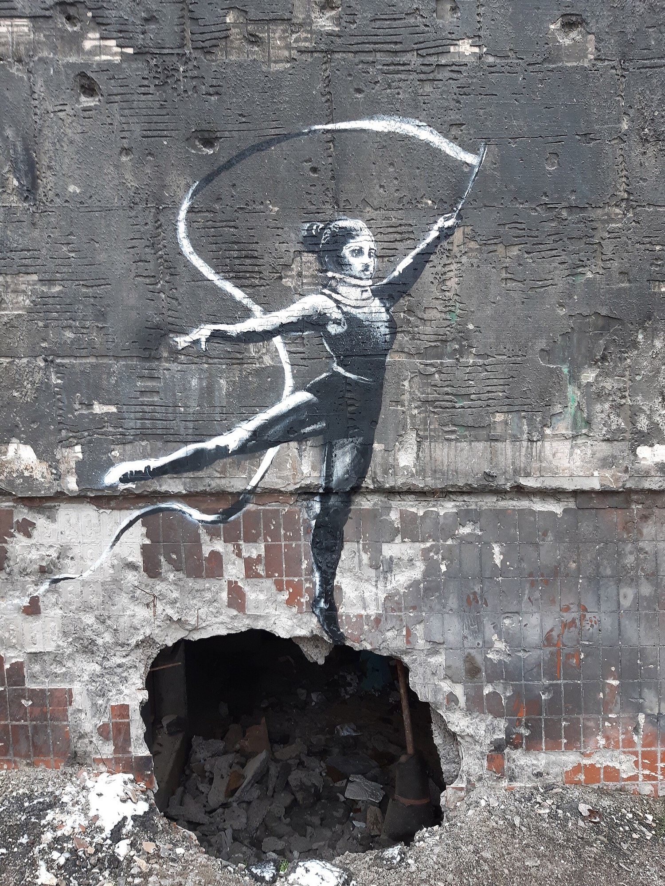

Anglais · Seconde bac pro (all streams) · A2 and B1 (CEFR)
Banksy: Who Owns an Anonymous Voice?
Six lessons of 55 minutes, designed by Madame Carole Paoli Pompougnac. Programme de langues vivantes, BO spécial n° 5 du 11 avril 2019. Two clear pathways in every lesson, A2 and B1, on the same works and the same questions.

Why this sequence?
Banksy paints on walls, in streets, on hotels and in temporary parks. A work on a wall often has no civil name beside it. The public meets the image first, and the author only as a signature, a rumour or a newspaper claim. That mystery has made the work famous. It has also made it easy to copy, to cut out, to sell, and to discuss in class, because so many original images can be shown.
This sequence starts from the works themselves. It then asks two questions that do not have a single schoolbook answer. First: does it matter who the artist is in private life, or only what the work does in public? Second: when a painting is on a wall, who should decide what happens to it, the artist, the owner of the wall, the city, or the people who walk past?
This is an open question. You can argue that a mural already has a public author, the name Banksy, without a civil identity. You can argue that a wall belongs to its owner, or that a work made for the street should stay in the street. At the end of the sequence, you will defend your own answer, with evidence, and you will keep claims in their right category: fact, attributed claim, rumour, or interpretation.
Fiche d'identité
| Title | Banksy: Who Owns an Anonymous Voice? |
|---|---|
| Class | Seconde bac pro, all streams (production and services). Première classes can follow the B1 pathway as the main track. |
| Level | A2 and B1 (CEFR), as two clear pathways in every lesson. Same supports, different expected language and length. |
| Programme | BO spécial n° 5 du 11 avril 2019, langues vivantes des classes préparant au CAP et au baccalauréat professionnel |
| Length | Six lessons of 55 minutes, each planned over 52 minutes, with a checkpoint at minute 44 and an eight-minute essential closing route |
| Differentiation | Two pathways, A2 and B1, visible in every lesson. Students work on the same images and the same questions. |
| Final task | A cultural mediation team advises a local exhibition entitled Banksy: Public Walls, Private Names. |
Programme and five objectives
Programme de langues vivantes des classes préparant au CAP et au baccalauréat professionnel (arrêté du 3 avril 2019). Source: education.gouv.fr.
The programme does not use the numbered cultural axes of the lycée général et technologique. It organises teaching around two contexts of communication. This sequence works in both. The five objectives below are the programme themes that the sequence actually serves.
Context 1. Everyday, personal, social and civic life
| Objective from the programme | Where in the sequence |
|---|---|
| 1. Grandes œuvres célèbres (peinture, sculpture, cinéma, photographie) | Every lesson: describing and interpreting murals, a temporary park, a hotel and an auction film |
| 2. Personnages historiques et personnalités célèbres | Lessons 1, 2 and 6: a public artistic name, without treating a civil identity as established |
| 3. Médias, réseaux sociaux et internet: pratiques et enjeux | Lesson 2: Reuters reporting, an earlier press claim from 2008, a fact-check, and the ethics of publication |
| 4. Grands enjeux contemporains, droits de l'homme et migrations | Lessons 4 and 5: public space, conflict, displacement, and who may see a work |
| 5. Événements culturels, lieux symboliques et tourisme | Lessons 4 and 6: Dismaland, The Walled Off Hotel, and a mediation task for visitors |
Context 2. Professional life
| Professional skill named by the programme | Where in the sequence |
|---|---|
| Identifying different viewpoints and taking part in a debate | Lessons 2, 3 and 5: a newsroom, a rights dispute, a public-art committee |
| Providing explanations adapted to a client or a visitor | Lesson 6: acting as a cultural mediator |
| Producing a short professional report and proposing solutions | Lesson 6: a written exhibition recommendation and an ethical label |
The six lessons
| Lesson | Question of the day | Language focus |
|---|---|---|
| 1. Can an image speak without a name? | Can we understand an artwork before we know who made it? | there is / there are; present continuous; may |
| 2. Should the public know who Banksy is? | When does reporting an identity serve the public, and when does it intrude on a private life? | according to; reported that; may / might; did not confirm is not denied |
| 3. If you own the wall, do you own the art? | Can someone own the object without owning every right connected to it? | was painted / was removed / was returned; should; however |
| 4. Can anti-commercial art escape the market? | Does selling criticism weaken it, spread it, or change it? | comparatives; more... than; whereas; although |
| 5. Does a mural lose its voice when it leaves its wall? | Is a street artwork an image alone, or an image in a particular place? | if + present, will / may; because of; in order to |
| 6. Exhibiting Banksy without owning the name | How can a mediator inform the public without overstating evidence or erasing the street? | review: should, may, although, if, accurate attribution |
Final task
Banksy: Public Walls, Private Names. Your class is a cultural mediation team. The organisers want to exhibit photographs of murals and to discuss a fictional proposal: should a mural be removed from a privately owned building and shown indoors? Each student presents one artwork, explains why its location matters, distinguishes a documented event from an identity claim, recommends what should happen to the fictional mural, answers a visitor's question, and writes a short ethical exhibition label. Nobody is asked to discover a private address, to identify relatives, or to investigate a private person.
Assessments
Assessment calendar
| Assessment | When | What | Weight |
|---|---|---|---|
| Diagnostic | Lesson 1, first 12 minutes | Observe a mural, speak and write without researching the artist | Not marked: used to place students on the A2 or B1 pathway |
| Mid-point oral | Lesson 3, minutes 28 to 44 | Paired speaking on ownership, with A2 and B1 grids, then self-correction | /20, coefficient 1 |
| Summative | Lesson 6 | Final oral task (continuous speaking and interaction) and a written label and recommendation, with A2 and B1 grids | /20, coefficient 2 |
Every grid includes a language criterion: vocabulary from the sequence, and accurate syntax. After oral work, each student notes what was missed, using the teacher's grid, and produces an improved version.
Downloads
Student pack, teacher's guide and dys version, each in pdf, docx and odt.
On the site: dys version · teacher's guide · sources.
Photographs used in the sequence
The images are photographs from Wikimedia Commons, downloaded for this page, with the photographer and the licence in each caption. A Creative Commons or public-domain licence for a photograph does not remove rights in the artwork that was photographed. Pest Control is Banksy's official contact and the body that issues certificates of authenticity for eligible works. It does not, according to its own FAQ, certify illegally executed works, and it does not treat the removal of a street mural as a normal way to obtain a certificate.